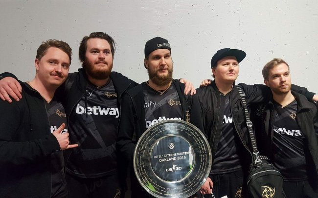

ESPORTS

TEAMS
Astralis
Astralis is a Danish eSports team which was founded in 2016. They were founded after They are currently ranked as the 2nd best CS:GO team in the world as of December 2020.
The founding of the team is complicated, the roster of Dignitas in early 2015 all moved to Team SoloMid (TSM), only then to leave TSM at the end of 2015 to form a new team. Team Questionmark (or ?).
This team then went on to obtain the rights to the name Astralis, which was formerly used by a Finnish team that played the original Counter:Strike.
Despite the constant shuffling the team went on to be one of the best teams in recent history winning tournament after tournament, dominating the scene.
Even in 2020 they have won many tournaments including ESL Pro League 12 and Dreamhack Masters Winter 2020 -Europe.
Their active squad as of December 2020 consists of dupreeh, Xyp9x, gla1ve, Magisk, dev1ce and Bubzkji and they are coached by zonic,a former professional Counter:Strike player and arguably a very good CS:GO player too, often being substituted in when no one else is available to play.
Team members gathered around along with their coach.
Ninjas in Pyjamas (NiP)
NiP is a swedish eSports organisation that was formed all the way back in 2000 and they originally played Counter:Strike up until 2007 when they dissolved. They returned with a Counter:Strike team in 2012 and have done very well since. Their major achievements would be winning the Intel Extreme Masters XII - Oakland in 2017 in which they beat FaZe clan in the final and winning the DreamHack Masters Malmö 2016 in which they beat Na’Vi. Their active squad as of December 2020 includes REZ, Plopski, twist, nawwk and hampus and is coached by THREAT.
The NiP team celebrating their win at Intel Extreme Masters XII - Oakland
Highlights
A video of some of Astralis' best moments of 2019